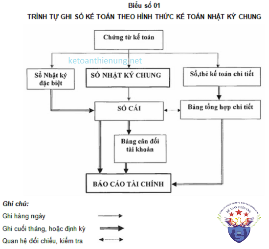
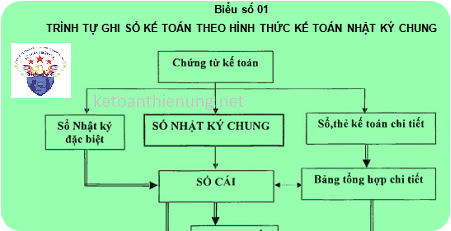

Ghi sổ kế toán theo hình thức Nhật ký chung được nhiều DN lựa chọn và áp dụng, Kế toán Diệu Tâm xin hướng dẫn cách ghi sổ theo hình thức Nhật ký chung theo Thông tư 200 và 133.
1) Nguyên tắc, đặc trưng cơ bản của hình thức ghi sổ Nhật ký chung:
- Tất cả các nghiệp vụ kinh tế, tài chính phát sinh đều phải được ghi vào sổ Nhật ký, mà trọng tâm là sổ Nhật ký chung, theo trình tự thời gian phát sinh và theo nội dung kinh tế (định khoản kế toán) của nghiệp vụ đó. Sau đó lấy số liệu trên các sổ Nhật ký để ghi Sổ Cái theo từng nghiệp vụ phát sinh.
Hình thức kế toán Nhật ký chung gồm các loại sổ chủ yếu sau:
- Sổ Nhật ký chung, Sổ Nhật ký đặc biệt;
- Sổ Cái;
- Các sổ, thẻ kế toán chi tiết.
2) Trình tự ghi sổ kế toán theo hình thức Nhật ký chung:
+) Hàng ngày:
- Căn cứ vào các chứng từ đã kiểm tra được dùng làm căn cứ ghi sổ, trước hết ghi nghiệp vụ phát sinh vào sổ Nhật ký chung, sau đó căn cứ số liệu đã ghi trên sổ Nhật ký chung để ghi vào Sổ Cái theo các tài khoản kế toán phù hợp. Nếu đơn vị có mở sổ, thẻ kế toán chi tiết thì đồng thời với việc ghi sổ Nhật ký chung, các nghiệp vụ phát sinh được ghi vào các sổ, thẻ kế toán chi tiết liên quan.
- Trường hợp đơn vị mở các sổ Nhật ký đặc biệt thì hàng ngày, căn cứ vào các chứng từ được dùng làm căn cứ ghi sổ, ghi nghiệp vụ phát sinh vào sổ Nhật ký đặc biệt liên quan. Định kỳ (3, 5, 10... ngày) hoặc cuối tháng, tuỳ khối lượng nghiệp vụ phát sinh, tổng hợp từng sổ Nhật ký đặc biệt, lấy số liệu để ghi vào các tài khoản phù hợp trên Sổ Cái, sau khi đã loại trừ số trùng lặp do một nghiệp vụ được ghi đồng thời vào nhiều sổ Nhật ký đặc biệt (nếu có).
+) Cuối tháng, cuối quý, cuối năm:
- Cộng số liệu trên Sổ Cái, lập Bảng cân đối số phát sinh. Sau khi đã kiểm tra đối chiếu khớp đúng, số liệu ghi trên Sổ Cái và bảng tổng hợp chi tiết (được lập từ các Sổ, thẻ kế toán chi tiết) được dùng để lập các Báo cáo tài chính. VVề nguyên tắc, Tổng số phát sinh Nợ và Tổng số phát sinh Có trên Bảng cân đối số phát sinh phải bằng Tổng số phát sinh Nợ và Tổng số phát sinh Có trên sổ Nhật ký chung (hoặc sổ Nhật ký chung và các sổ Nhật ký đặc biệt sau khi đã loại trừ số trùng lặp trên các sổ Nhật ký đặc biệt) cùng kỳ.
- Sơ đồ:

3. Nội dung, kết cấu và phương pháp ghi sổ theo hình thức nhật ký chung:
(1) Nhật ký chung (Mẫu số 03a-DN):
a) Nội dung:
Sổ Nhật ký chung là sổ kế toán tổng hợp dùng để ghi chép các nghiệp vụ kinh tế, tài chính phát sinh theo trình tự thời gian đồng thời phản ánh theo quan hệ đối ứng tài khoản (Định khoản kế toán) để phục vụ việc ghi Sổ Cái. Số liệu ghi trên sổ Nhật ký chung được dùng làm căn cứ để ghi vào Sổ Cái.
b) Kết cấu và phương pháp ghi sổ:
Kết cấu sổ Nhật ký chung được quy định thống nhất theo mẫu ban hành trong chế độ này:
- Cột A: Ghi ngày, tháng ghi sổ.
- Cột B, C: Ghi số hiệu và ngày, tháng lập của chứng từ kế toán dùng làm căn cứ ghi sổ.
- Cột D: Ghi tóm tắt nội dung nghiệp vụ kinh tế, tài chính phát sinh của chứng từ kế toán.
- Cột E: Đánh dấu các nghiệp vụ ghi sổ Nhật ký chung đã được ghi vào Sổ Cái.
- Cột G: Ghi số thứ tự dòng của Nhật ký chung
- Cột H: Ghi số hiệu các tài khoản ghi Nợ, ghi Có theo định khoản kế toán các nghiệp vụ phát sinh. Tài khoản ghi Nợ được ghi trước, Tài khoản ghi Có được ghi sau, mỗi tài khoản được ghi một dòng riêng.
- Cột 1: Ghi số tiền phát sinh các Tài khoản ghi Nợ.
- Cột 2: Ghi số tiền phát sinh các Tài khoản ghi Có.
Cuối trang sổ, cộng số phát sinh luỹ kế để chuyển sang trang sau. Đầu trang sổ, ghi số cộng trang trước chuyển sang.
- Về nguyên tắc tất cả các nghiệp vụ kinh tế, tài chính phát sinh đều phải ghi vào sổ Nhật ký chung. Tuy nhiên, trong trường hợp một hoặc một số đối tượng kế toán có số lượng phát sinh lớn, để đơn giản và giảm bớt khối lượng ghi Sổ Cái, doanh nghiệp có thể mở các sổ Nhật ký đặc biệt để ghi riêng các nghiệp vụ phát sinh liên quan đến các đối tượng kế toán đó.
- Các sổ Nhật ký đặc biệt là một phần của sổ Nhật ký chung nên phương pháp ghi chép tương tự như sổ Nhật ký chung. Song để tránh sự trùng lặp các nghiệp vụ đã ghi vào sổ Nhật ký đặc biệt thì không ghi vào sổ Nhật ký chung. Trường hợp này, căn cứ để ghi Sổ Cái là Sổ Nhật ký chung và các Sổ Nhật ký đặc biệt.
- Dưới đây là hướng dẫn nội dung, kết cấu và cách ghi sổ của một số Nhật ký đặc biệt thông dụng.
(1.1) Sổ Nhật ký thu tiền (Mẫu số 03a1-DN):
a) Nội dung: Là sổ Nhật ký đặc biệt dùng để ghi chép các nghiệp vụ thu tiền của doanh nghiệp. Mẫu sổ này được mở riêng cho thu tiền mặt, thu qua ngân hàng, cho từng loại tiền (đồng Việt Nam, ngoại tệ) hoặc cho từng nơi thu tiền (Ngân hàng A, Ngân hàng B...).
b) Kết cấu và phương pháp ghi sổ:
- Cột A: Ghi ngày, tháng ghi sổ.
- Cột B,C: Ghi số hiệu và ngày, tháng lập của chứng từ kế toán dùng làm căn cứ ghi sổ.
- Cột D: Ghi tóm tắt nội dung nghiệp vụ kinh tế phát sinh của chứng từ kế toán.
- Cột 1: Ghi số tiền thu được vào bên Nợ của tài khoản tiền được theo dõi trên sổ này như: Tiền mặt, tiền gửi ngân hàng.. .
- Cột 2, 3, 4, 5, 6: Ghi số tiền phát sinh bên Có của các tài khoản đối ứng.
Cuối trang sổ, cộng số phát sinh luỹ kế để chuyển sang trang sau.
Đầu trang sổ, ghi số cộng trang trước chuyển sang.
(1.2) Nhật ký chi tiền (Mẫu số S03a2-DN):
a) Nội dung: Là sổ Nhật ký đặc biệt dùng để ghi chép các nghiệp vụ chi tiền của doanh nghiệp. Mẫu sổ này được mở riêng cho chi tiền mặt, chi tiền qua ngân hàng, cho từng loại tiền (đồng Việt Nam, ngoại tệ) hoặc cho từng nơi chi tiền (Ngân hàng A, Ngân hàng B...).
b) Kết cấu và phương pháp ghi sổ:
- Cột A: Ghi ngày, tháng ghi sổ.
- Cột B, C: Ghi số hiệu và ngày, tháng lập của chứng từ dùng làm căn cứ ghi sổ.
- Cột D: Ghi tóm tắt nội dung nghiệp vụ phát sinh của chứng từ kế toán.
- Cột 1: Ghi số tiền chi ra vào bên Có của tài khoản tiền được theo dõi trên sổ này, như: Tiền mặt, tiền gửi Ngân hàng...
- Cột 2, 3, 4, 5, 6 : Ghi số tiền phát sinh bên Nợ của các tài khoản đối ứng.
Cuối trang sổ, cộng số phát sinh luỹ kế để chuyển sang trang sau. Đầu trang sổ, ghi số cộng trang trước chuyển sang.
(1.3) Nhật ký mua hàng (Mẫu số S03a3-DN):
a) Nội dung: Là Sổ Nhật ký đặc biệt dùng để ghi chép các nghiệp vụ mua hàng theo từng loại hàng tồn kho của đơn vị, như: Nguyên liệu, vật liệu; công cụ, dụng cụ; hàng hoá;...
- Sổ Nhật ký mua hàng dùng để ghi chép các nghiệp vụ mua hàng theo hình thức trả tiền sau (mua chịu). Trường hợp trả tiền trước cho người bán thì khi phát sinh nghiệp vụ mua hàng cũng ghi vào sổ này.
b) Kết cấu và phương pháp ghi sổ.
- Cột A: Ghi ngày, tháng ghi sổ.
- Cột B, C: Ghi số hiệu và ngày, tháng lập của chứng từ kế toán dùng làm căn cứ ghi sổ.
- Cột D: Ghi tóm tắt nội dung nghiệp vụ phát sinh của chứng từ kế toán.
- Cột 1, 2, 3 : Ghi Nợ các tài khoản hàng tồn kho như: Hàng hoá, nguyên liệu vật liệu, công cụ, dụng cụ... Trường hợp đơn vị mở sổ này cho từng loại hàng tồn kho thì các cột này có thể dùng để ghi chi tiết cho loại hàng tồn kho đó như: Hàng hoá A, hàng hoá B...
- Cột 4: Ghi số tiền phải trả người bán tương ứng với số hàng đã mua.
Cuối trang sổ, cộng số luỹ kế để chuyển sang trang sau. Đầu trang sổ, ghi số cộng trang trước chuyển sang.
(1.4) Nhật ký bán hàng (Mẫu số S03a4-DN):
a) Nội dung: Là Sổ Nhật ký đặc biệt dùng để ghi chép các nghiệp vụ bán hàng của doanh nghiệp như: Bán hàng hoá, bán thành phẩm, bán dịch vụ.
Sổ Nhật ký bán hàng dùng để ghi chép các nghiệp vụ bán hàng theo hình thức thu tiền sau (bán chịu). Trường hợp người mua trả tiền trước thì khi phát sinh nghiệp vụ bán hàng cũng ghi vào sổ này.
b) Kết cấu và cách ghi sổ:
- Cột A: Ghi ngày, tháng ghi sổ.
- Cột B, C: Ghi số hiệu và ngày, tháng lập của chứng từ dùng làm căn cứ ghi sổ.
- Cột D: Ghi tóm tắt nội dung nghiệp vụ phát sinh của chứng từ kế toán.
- Cột 1: Ghi số tiền phải thu từ người mua theo doanh thu bán hàng.
- Cột 2, 3, 4: Mở theo yêu cầu của doanh nghiệp để ghi doanh thu theo từng loại nghiệp vụ: Bán hàng hoá, bán thành phẩm, bán bất động sản đầu tư, cung cấp dịch vụ... Trường hợp doanh nghiệp mở sổ này cho từng loại doanh thu: Bán hàng hoá, bán thành phẩm, bán bất động sản đầu tư, cung cấp dịch vụ... thì các cột này có thể dùng để ghi chi tiết cho từng loại hàng hoá, thành phẩm, bất động sản đầu tư, dịch vụ. Trường hợp không cần thiết, doanh nghiệp có thể gộp 3 cột này thành 1 cột để ghi doanh thu bán hàng chung.
Cuối trang sổ, cộng số luỹ kế để chuyển sang trang sau. Đầu trang sổ, ghi số cộng trang trước chuyển sang.
Doanh nghiệp có thể mở một hoặc một số sổ Nhật ký đặc biệt như đã nêu trên để ghi chép. Trường hợp cần mở thêm các sổ Nhật ký đặc biệt khác phải tuân theo các nguyên tắc mở sổ và ghi sổ đã quy định.
(2) Sổ Cái (Mẫu số S03b- DN)
a) Nội dung: Sổ Cái là sổ kế toán tổng hợp dùng để ghi chép các nghiệp vụ kinh tế, tài chính phát sinh trong niên độ kế toán theo tài khoản kế toán được quy định trong hệ thống tài khoản kế toán áp dụng cho doanh nghiệp. Mỗi tài khoản được mở một hoặc một số trang liên tiếp trên Sổ Cái đủ để ghi chép trong một niên độ kế toán.
b) Kết cấu và phương pháp ghi sổ:
Sổ Cái được quy định thống nhất theo mẫu ban hành trong chế độ này.
Cách ghi Sổ Cái được quy định như sau:
- Cột A: Ghi ngày, tháng ghi sổ.
- Cột B, C: Ghi số hiệu và ngày, tháng lập của chứng từ kế toán được dùng làm căn cứ ghi sổ.
- Cột D: Ghi tóm tắt nội dung nghiệp vụ phát sinh.
- Cột E: Ghi số trang của sổ Nhật ký chung đã ghi nghiệp vụ này.
- Cột G: Ghi số dòng của sổ Nhật ký chung đã ghi nghiệp vụ này.
- Cột H: Ghi số hiệu của các tài khoản đối ứng liên quan đến nghiệp vụ phát sinh với tài khoản trang Sổ Cái này (Tài khoản ghi Nợ trước, tài khoản ghi Có sau).
- Cột 1, 2: Ghi số tiền phát sinh bên Nợ hoặc bên Có của Tài khoản theo từng nghiệp vụ kinh tế.
Đầu tháng, ghi số dư đầu kỳ của tài khoản vào dòng đầu tiên, cột số dư (Nợ hoặc Có). Cuối tháng, cộng số phát sinh Nợ, số phát sinh Có, tính ra số dư và cộng luỹ kế số phát sinh từ đầu quý của từng tài khoản để làm căn cứ lập Bảng Cân đối số phát sinh (Bảng cân đối tài khoản) và báo cáo tài chính.
Xem thêm: Mẫu sổ Nhật ký chung trên Excel
Kế toán Diệu Tâm Chúc các bạn thành công.
__________________________________________________
